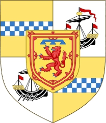

Lord of the Isles. Blev högst 64 år.
1359 Islay, Scotland. [1]
1423 Islay, Scotland. [2]
Anteckningar
Domhnall of Islay, Lord of the Isles
Från Wikipedia, den fria encyklopedin
Donald eller riktigt Domnhall of Islay, Lord of the Isles (1423) var son och efterträdare till John of Islay, Lord of the Isles. The Lordship of the Isles var baserat i och runt den skotska västkustön Islay, men hade under John of Islay kommit att omfatta de flesta av de andra öarna på västkusten, såväl som Morvern, Garmoran, Lochaber, Kintyre och Knapdale . Även om det är brukligt att framställa Lords of the Isles som skilda från det skotska politiska livet och som representanter för ett alternativt herrskapsmärke, skymmer denna uppfattning till stor del det faktum att Domhnall bara var en av många magnater i slutet av 14:e och tidigt. 1400-talets Skottland som innehade stora herrskap med liten inblandning från kronan. Douglas-släkten i södra Skottland och Albany Stewarts parallella lätt Domhnalls herrskap. Domhnall var,
Domhnall tillbringade några av sina första år som Lord of the Isles med att undertrycka en revolt av sin bror John Mór. John var Domhnalls yngre bror, och avskydde hans magra del av sin fars arv. Även om han erkändes som arvtagare (tanaiste), fick han bara fläckar av mark i Kintyre och Islay i arvet. Upproret startade 1387 och fortsatte in på 1390-talet, och John fann stöd från släkten MacLean (MacGill-Eain). Men John och MacLeans tvingades så småningom att underkasta sig Domhnall, och 1395 hade John Mór tvingats in i Irland där han trädde i tjänst hos kung Richard II av England och senare etablerade ett MacDonald-herrskap i Antrim.
Undertryckandet av revolten gjorde det möjligt för Domhnall att vända sin uppmärksamhet norrut och österut. Det mesta av området norr och öster om Lordship, det vill säga Skye, Ross, Badenoch och Urquhart, kontrollerades av Alexander Stewart, Earl of Buchan, känd som "Wolf of Badenoch". Alexander hade byggt upp en maktbas i de centrala högländerna och norr om Skottland sedan John Randolph, 3:e earl av Moray, död 1346. Han hade förvärvat kontrollen över herrskapet av Badenoch, jarldömet Buchan och justitiarskapet i Scotia, som samt att effektivt ta platsen för jarlarna av Moray och Ross som "Nordens löjtnant". Han var på en gång de facto-härskaren över norra Skottland samt det medel med vilket kronan själv utövade kontroll.
Emellertid hade det förekommit klagomål på hans cateraners (krigsbands) verksamhet, och ännu viktigare, Alexanders position var hotande inte bara för kronan utan också för Euphemia I, grevinnan av Ross, hennes son Alexander och den titulära Dunbar Earl of Moray . Sent 1388, strax efter att ha blivit kungarikets väktare, berövade Robert Stewart, jarl av Fife (skapad hertig av Albany 1398) Alexander rättsväsendet. Angreppet av Alexanders position fortsatte in på 1390-talet. Domhnall och hans bror Alexander av Lochaber var i en perfekt position att dra nytta av. År 1394 ingick den senare ett 17-årigt avtal med den titulära jarlen av Moray som tog över Alexander Stewarts roll som "beskyddare" av de rika comital- och biskopsländerna i Morays lågland. MacDonalds var i besittning av Urquhart i slutet av 1395,
Men Guardian vände snart sin fientlighet mot MacDonalds. Alexander av Lochaber hade använt sin roll som "beskyddare" för att främja sitt eget herrskap, inklusive att bevilja biskopsjord till sina militära anhängare. 1398 uppmanades Robert Stewart (numera hertig av Albany) att vidta åtgärder, men den väl förberedda expeditionen blev till slut ingenting. Lochaber fortsatte sin verksamhet och brände i en razzia 1402 burgh of Elgin, för vilken han bannlystes av William Spynie, biskop av Moray. Men senare på året besökte Alexander Spynie för att söka förlåtelse.
Domhnall själv väckte ytterligare oro när Domhnall samma år, efter Alexander Leslie, Earl of Ross död, pressade Mariota, Alexander Leslies syster och Domhnalls hustrus anspråk på Ross, och försökte få kontroll över jarldömet. Någon gång efter 1405 men före 1411 fick Domhnall kontroll över Dingwall Castle, Earldomens huvudsäte. Året efter den nominella kungen Robert III:s död (1406) skickade Domhnall i augusti 1407 sändebud till England till tronföljaren, den fånge James Stewart. Kung Henrik IV av England skickade sina egna sändebud året därpå för att förhandla om en allians mot Albany.
Med kontroll över huvudsätet för jarldömet Ross och stöd från den landsförvisade arvtagaren till den skotska tronen, kände sig Domhnall 1411 stark nog att marschera mot Albanys främsta nordliga allierade, Alexander Stewart, Earl of Mar. I slaget vid Harlaw misslyckades Domhnall. för att tilldela en avgörande seger och drog sig tillbaka till det västra höglandet. I efterdyningarna kunde Albany återta Dingwall och ta kontroll över Easter Ross. År 1415 avsade Alexander Leslies arvinge, Euphemia II, jarldömet till Albany. Domhnall förberedde sig för krig och utropade sig själv som "Lord of Ross". Även om Albany utsåg sin egen son John Stewart till jarldömet, fortsatte Domhnalls hustru att betrakta sig själv som den rättmätiga grevinnan.
Domhnall dog 1423 på Islay, det historiska centrumet för hans herredømme.